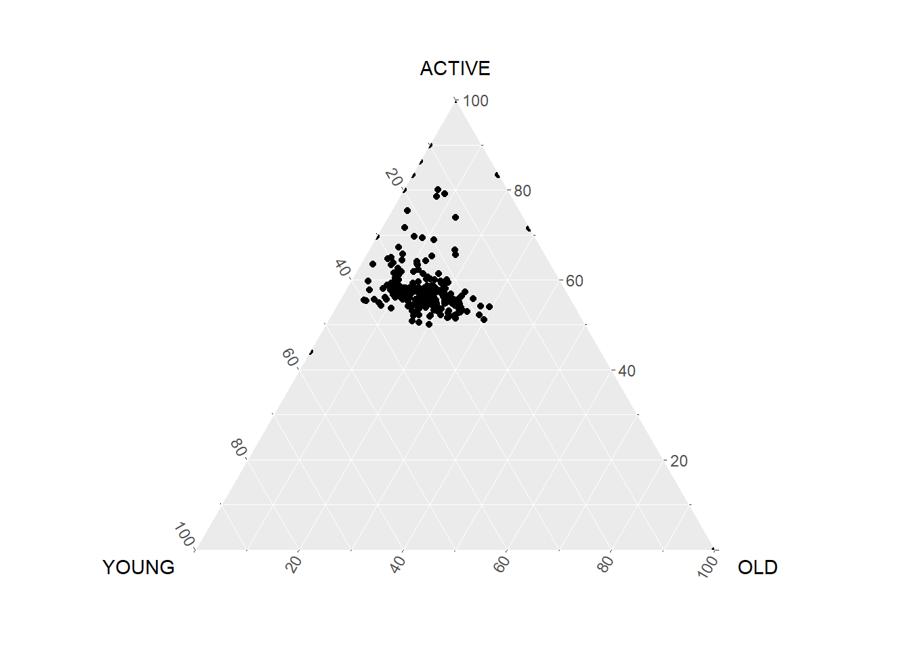
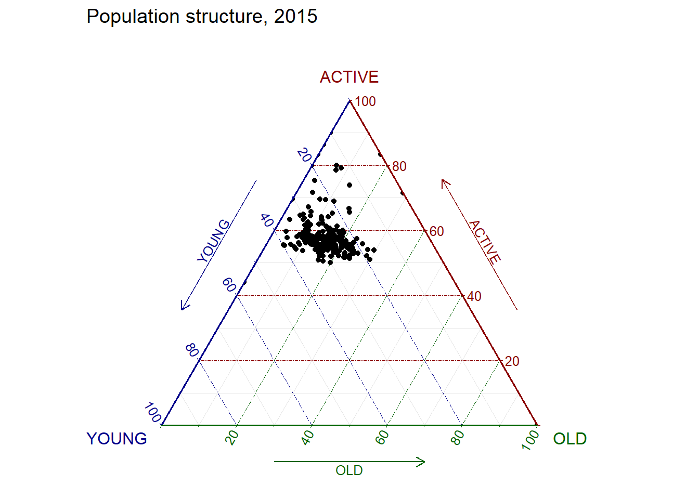

pacman::p_load(ggtern, plotly, tidyverse)Hands-on Exercise 5: Building Ternary Plot with R
Overview
Ternary plots are a way of displaying the distribution and variability of three-part compositional data. (For example, the proportion of aged, economy active and young population or sand, silt, and clay in soil.) It’s display is a triangle with sides scaled from 0 to 1. Each side represents one of the three components. A point is plotted so that a line drawn perpendicular from the point to each leg of the triangle intersect at the component values of the point.
In this hands-on, you will learn how to build ternary plot programmatically using R for visualising and analysing population structure of Singapore.
The hands-on exercise consists of four steps:
- Install and launch tidyverse and ggtern packages.
- Derive three new measures using mutate() function of dplyr package.
- Build a static ternary plot using ggtern() function of ggtern package.
- Build an interactive ternary plot using plot-ly() function of Plotly R package.
Installing and launching R packages
For this exercise, two main R packages will be used in this hands-on exercise, they are:
- ggtern, a ggplot extension specially designed to plot ternary diagrams. The package will be used to plot static ternary plots.
- Plotly R, an R package for creating interactive web-based graphs via plotly’s JavaScript graphing library, plotly.js . The plotly R libary contains the ggplotly function, which will convert ggplot2 figures into a Plotly object.
We will also need to ensure that selected tidyverse family packages namely: readr, dplyr and tidyr are also installed and loaded.
In this exercise, version 3.2.1 of ggplot2 will be installed instead of the latest version of ggplot2. This is because the current version of ggtern package is not compatible to the latest version of ggplot2.
The code chunks below will accomplish the task.
Data Preparation
The data
For the purpose of this hands-on exercise, the Singapore Residents by Planning AreaSubzone, Age Group, Sex and Type of Dwelling, June 2000-2018 data will be used. The data set has been downloaded and included in the data sub-folder of the hands-on exercise folder. It is called respopagsex2000to2018_tidy.csv and is in csv file format.
Importing Data
To important respopagsex2000to2018_tidy.csv into R, read_csv() function of readr package will be used.
pop_data <- read_csv("data/respopagsex2000to2018_tidy.csv") Preparing the Data
Next, use the mutate() function of dplyr package to derive three new measures, namely: young, active, and old.
agpop_mutated <- pop_data %>%
mutate(`Year` = as.character(Year))%>%
pivot_wider(names_from = AG,
values_from = Population) %>%
mutate(YOUNG = rowSums(.[4:8]))%>%
mutate(ACTIVE = rowSums(.[9:16])) %>%
mutate(OLD = rowSums(.[17:21])) %>%
mutate(TOTAL = rowSums(.[22:24])) %>%
filter(Year == 2018)%>%
filter(TOTAL > 0)Plotting Ternary Diagram with R
Plotting a static ternary diagram
Use ggtern() function of ggtern package to create a simple ternary plot.
ggtern(data=agpop_mutated,aes(x=YOUNG,y=ACTIVE, z=OLD)) +
geom_point()
ggtern(data=agpop_mutated, aes(x=YOUNG,y=ACTIVE, z=OLD)) +
geom_point() +
labs(title="Population structure, 2015") +
theme_rgbw()
Plotting an interative ternary diagram
The code below create an interactive ternary plot using plot_ly() function of Plotly R.
label <- function(txt) {
list(
text = txt,
x = 0.1, y = 1,
ax = 0, ay = 0,
xref = "paper", yref = "paper",
align = "center",
font = list(family = "serif", size = 15, color = "white"),
bgcolor = "#b3b3b3", bordercolor = "black", borderwidth = 2
)
}
axis <- function(txt) {
list(
title = txt, tickformat = ".0%", tickfont = list(size = 10)
)
}
ternaryAxes <- list(
aaxis = axis("Young"),
baxis = axis("Active"),
caxis = axis("Old")
)
plot_ly(
agpop_mutated,
a = ~YOUNG,
b = ~ACTIVE,
c = ~OLD,
color = I("black"),
type = "scatterternary"
) %>%
layout(
annotations = label("Ternary Markers"),
ternary = ternaryAxes
)